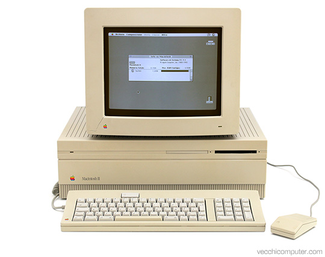

capitolo 1
indice
paragrafo 1: storia
1940 - Calcolatore elettromeccanico;
1981 - Primo PC (Personal Computer);
1991 - Linux, sistema operativo gratuito;
1992 - WWW (World Wide Web);
1998 - Google;
2004 - Facebook;
2007 - Apple iphone;
2008 - Android;
2010 - Windows 10;
2011 - Windows 11.
Nel 1936 il matematico inglese Alan Turing propose l'idea di una macchina che fosse capace
di eseguire ogni tipo di calcolo su numerie simboli. Una macchina di Turing è definita da un insieme
di regole che definiscono il comportamento della macchina su un nastro di input-output (lettura e scrittura).
Fu utilizzata dalle forze armate tedesche durante il periodo nazista e della seconda guerra mondiale.

paragrafo 2: scienza
L’informatica è la scienza che studia la rappresentazione, l’elaborazione e la trasmissione automatica delle informazioni attraverso computer
e altri dispositivi elettronici. Si occupa sia degli aspetti teorici, come gli algoritmi e le strutture dati, sia di quelli pratici, come la
programmazione, i sistemi operativi, le reti e l’intelligenza artificiale.
L’informatica è la disciplina che permette di progettare software, creare applicazioni, gestire database, sviluppare siti
web e molto altro. Grazie all’informatica, oggi possiamo usare smartphone, navigare su Internet, giocare ai videogiochi e automatizzare
processi complessi in vari settori.
termini informatici:
- Algoritmo: un algoritmo è un procedimento di calcolo, che risolve un determinato problema attraverso una sequenza di passi elementari.
L'algoritmo è un concetto fondamentale dell'informatica, perché è alla base
dei principi teorici di calcolabilità: un problema è calcolabile quando è risolvibile mediante un algoritmo.
- Applicazione: l'espressione "applicazione informatica" indica un programma che e' specializzata nel funzionamento
di un computer in una determinata attività (per esempio l'home banking).
- Bit: è l'unità elementare dell'informatica; può assumere due valori, indicati dalle
cifre 0 e 1. È l'abbreviazione di binary digit, ovvero "cifra binaria".
- Byte: è l'unità dell'informatica costituita da 8 bit, usata come unità di misura della capacità di memoria di un sistema.
- File: un file è un insieme di informazioni, in formato digitale,collegate su un supporto di memoria di massa
(disco rigido, DVD, chiave USB, ecc.). I file possono memorizzare entità applicazioni e si
classificano a seconda del tipo di informazioni cui si riferiscono: un documento di testo, un'immagine, un suono,
un video.
- Database: e' una struttura complessa di organizzazione di dati, che permette l'inserimento di nuovi dati, la rimozione
di vecchi, la modifica dei dati stessi, il loro aggiornamento e la loro elaborazione.
paragrafo 3: aspetti positivi e negativi dell´informatica
Aspetti positivi:
- divertimento;
- comunicazione a distanza;
- ricerca di informazioni;
- con l'informatica i trasporti sono più rapidi ed economici;
- Grazie alla tecnologia sono possibili invenzioni straordinarie.
Aspetti negativi:
- dipendenza;
- perdita del passare del tempo;
- furto di dati personali;
- Sono cambiati i rapporti tra le persone;
- Siamo sempre iperconnessi.
paragrafo 4: consapevoli in rete
Comprendere il contesto digitale significanon farsi guidare dalle tecnologie ma capire
come sceglierle e adattarli ai propri bisogni.
la cittadinanza digitale consiste nell'esercitare la competenza di cittadinanza
nel contesto digitale.